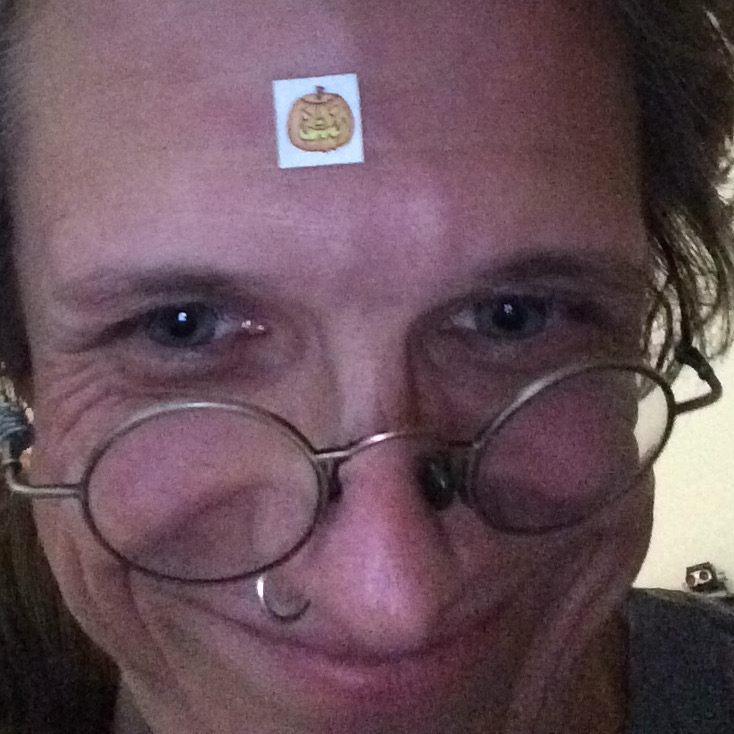

Hogweed er et topersonsprosjekt bestående av:
Petter "da har jeg tukla litt rundt" Jørgensen
Petter ble født i 1999 og vokste opp på en liten bygd utenfor Bodø. Han
har vært interessert i data og teknologi hele livet og har de siste par årene
studert dette ved NTNU. Det siste året har han bodd og studert i Gjøvik.

Simen "eller en liten jævel på hoppestokk" Hagerup
Simen er født i 1980 og jobber som kulturarbeider. Han har
tidligere studert i Bø, København, Paris og Stockholm;
denne gangen satser han sterkt på å fullføre en bachelorgrad.